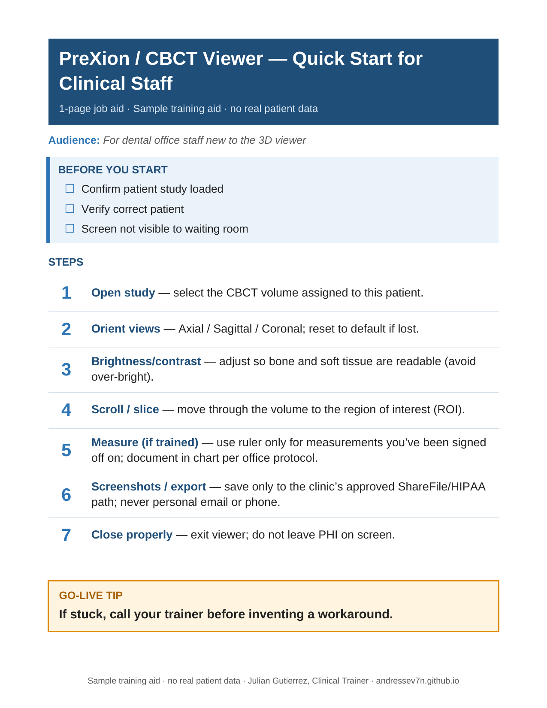

Mobile CBCT Dental Imaging | About 6 years
Training Clinicians on Unfamiliar Systems
Clinicians knew anatomy. They did not know the software. I closed that gap in the middle of real cases.
The Problem
In a mobile CBCT imaging environment, clinicians, new technicians, and client offices regularly had to work with unfamiliar software while managing real patient cases. The challenge was not explaining how the technology worked in the abstract. It was helping people become comfortable enough to use it accurately and independently, under the pressure of their actual caseload.
Coverage: Trained dentists and staff at offices across Southern California, from Chula Vista to the San Fernando Valley and from Anaheim Hills to Indio.
My Role
Over six years, my role grew past operating the imaging equipment. I became the technical resource clinicians, new technicians, and client offices turned to: supporting software adoption, troubleshooting unfamiliar workflows, and helping people build confidence with a system they didn't use every day. I also supported new client onboarding and higher-complexity cases, where clear communication and coordination mattered more than usual.
- Performed CBCT scans for patients in dental offices.
- Installed imaging software in dental offices and trained dentists and staff hands-on, step by step.
- Trained the current owner of the company.
- Sent a daily end-of-day report to keep operations informed.
The Approach
A standard software walkthrough was rarely enough. Clinicians already understood anatomy and radiographs; what they didn't understand was how that same information appeared inside a CBCT viewer. So instead of teaching the software as something new, I connected it to what they already knew: for example, walking back through a familiar landmark, like a nerve they'd flag on any radiograph, and showing them exactly where it appeared in this new format. I showed only the parts of the system relevant to the case in front of them, rather than every available feature, so they had enough to complete the task and grow more independent with each visit.
I used the same logic training technicians: working through real cases instead of relying on procedural instructions alone, and adjusting how much guidance I gave based on their experience. The workflow also included secure delivery through a file-sharing service, which sometimes meant walking a clinician through setting up their account and downloading their own files for the first time.
The Result
Over time, many clinicians moved from relying on static reports or guided walkthroughs to requesting the interactive viewer file and navigating it on their own. Within the technical team, I also became the person other technicians reached out to when they hit something unfamiliar.
Looking back, the core of the role was never just explaining software. It was recognizing what someone already knew, identifying what was actually blocking them, and giving them just enough support to move forward on their own.
Work Sample: CBCT Viewer Job Aid

A one-page job aid that walks dental staff through reviewing a CBCT scan in five steps:
- Open the scan securely
- Orient the views
- Adjust contrast
- Measure and annotate
- Share through a HIPAA-compliant link
It also includes a "Common Errors" box and a "Privacy" box, so learners can avoid frequent mistakes and protect patient information.
Design choices: one page, numbered steps, short action-first instructions, and callouts for errors and privacy, built for use at the workstation during real work.
Attention to Detail in Practice
Before an implant procedure, I noticed the patient may have left out some information. After completing the ordered 5x5 CBCT scan (covering one or two teeth), I recommended a full-jaw scan to the doctor, who approved it. The full-jaw scan helped the doctor identify an issue near the surgery site, and the doctor paused the procedure and requested a radiologist review. This experience shapes how I train: I teach people not only which buttons to press, but also when to pause and ask questions.
“His knowledge of critical thinking and expertise in client satisfaction was a massive advantage to our day-to-day responsibilities.”
What this shows
Learner-centered training under real pressure: building on what people already know, teaching only what the task needs, job aids built for the workstation, and the judgment to pause and ask questions.